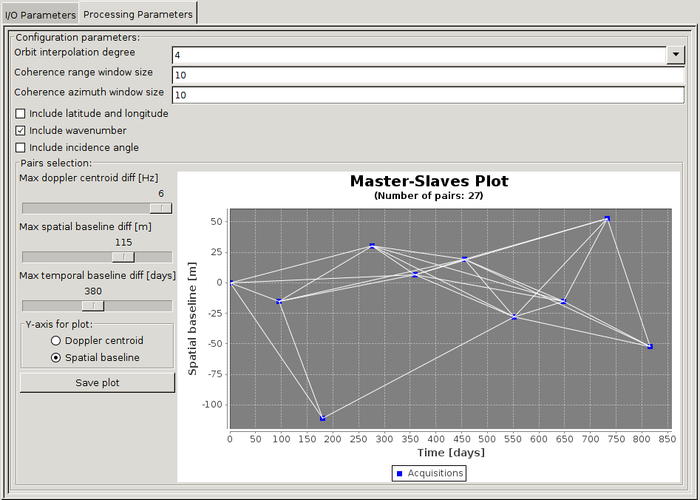

Multi-Reference InSAR Operator
Given a coregistered stack product, this operator allows for computing the interferometric phase as well as
estimating the interferometric coherence for arbitrary image pairs. Optionally, it can generate the following bands:
incidence angle, latitude, and longitude.
Input
- The input to this operator should be a stack product with an elevation band (whose name is prefixed by "elevation").
In the case of TOPS mode, the input product should have been previously deburst using the TOPSAR-Deburst operator.
Output
- The output of the operator is a product with the following bands:
Bands per interferometric pair (with date pairs of the form "[ddMMMYYYY]_[ddMMMYYYY]"):
-
i_ifg_[ddMMMYYYY]_[ddMMMYYYY]: I band for interferogram.
-
q_ifg_[ddMMMYYYY]_[ddMMMYYYY]: Q band for interferogram.
-
Intensity_ifg_[ddMMMYYYY]_[ddMMMYYYY]: virtual band for interferometric intensity (I^2 + Q^2).
-
Phase_ifg_[ddMMMYYYY]_[ddMMMYYYY]: virtual band for interferometric phase (atan2(Q, I)).
-
coh_ifg_[ddMMMYYYY]_[ddMMMYYYY]: interferometric coherence.
Bands created per secondary image (with secondary number "[SECONDARY_NUMBER]"):
-
wavenumber_sec[SECONDARY_NUMBER]_[ddMMMYYYY]: vertical wavenumber based on elevation band (unit: radians / meter).
Other bands:
-
elevation*: elevation band; same as input elevation band (unit: meters).
-
incidenceAngle: local incidence angle based on elevation band (unit: degrees).
-
lat: latitude based on elevation band (unit: degrees).
-
lon: longitude based on elevation band (unit: degrees).
Parameters

Configuration parameters
- Orbit interpolation degree: degree for polynomial interpolation of orbit.
- Coherence range window size: number of pixels for coherence estimation.
- Coherence azimuth window size: number of lines for coherence estimation.
- Include latitude and longitude: if True, the corresponding bands will be created.
- Include wavenumber: if True, the corresponding band will be created.
- Include incidence angle: if True, the corresponding band will be created.
Pair selection
- Max doppler centroid diff: maximum allowed absolute doppler centroid difference between image pairs (unit: Hz).
- Max spatial baseline diff: maximum allowed absolute spatial baseline difference between images pairs (unit: meters).
- Max temporal baseline diff: maximum allowed absolute temporal baseline difference between images pairs (unit: days).
Using GPT
If you are using GPT, the pair selection is done through the pairs parameter. This allows for explicitly listing the pairs, which provides more flexibility than the UI sliders.
For example, pairs could be set to: 06Jan2018-12Apr2018,06Jan2018-09Oct2018,06Jan2018-01Jan2019.
It is recommended to use the Graph Builder for quickly generating the pairs (by using the sliders) and subsequently saving the processing graph. The graph file can then be edited (optionally) and executed from the command line.